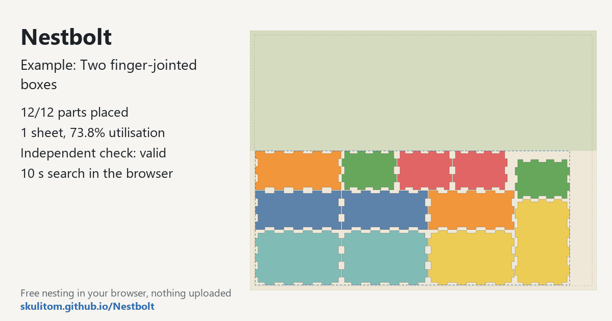

Nest two finger-jointed boxes
This drawing contains the panels for two 99 × 63 × 45 mm boxes: six per box (front, back, left, right, top and bottom), 12 in all, on a 400 × 300 mm laser bed. It is a useful starting point for near-rectangular parts with finger joints. Nestbolt's general search includes a bounding-rectangle packing start for parts such as box panels.
Free and MIT-licensed; your files never leave your computer.
What this job asks for
The example sets a default quantity of two for each panel type, giving two boxes. Rotations are limited to quarter turns. This is a chance to review how quantities, spacing and a small sheet work together before importing a different panel drawing.
| Sheet (mm) | 400 × 300 |
|---|---|
| Margin | 5 mm |
| Part spacing | 1 mm |
| Edge spacing | 1 mm |
| Allowed rotations | 0°, 90°, 180°, 270° |
| Part types and copies | 6 panel types (front, back, left, right, top, bottom) × 2 copies = 12 panels (two boxes) |
| Time budget | 10 seconds |
Measured layout
Measured on 2026-10-20 with a local build of main at c9b0176, in a headless Chromium browser on a desktop PC, with the example’s own settings: the 10-second search placed 12 of 12 panels (six per box) on one sheet, with 73.8% utilisation and material 0.557 sheets, and left a clear 400 × 139 mm offcut above the parts. The independent check: valid. Results vary a little between runs and computers, because the search stops at its time limit.

main nested it on 2026-10-20 (10-second search): 12/12 panels, one sheet, check valid.Try it yourself
Open the app, click “Two finger-jointed boxes” under “Or try an example:”; it loads the drawing and starts nesting straight away. Or download the box drawing and drop it into Nestbolt; use the settings above to reproduce the example request.

Watch the live best layout and the clear offcut shown above the parts. When you export, each sheet has an SVG and a DXF made from the original curves. The independent validator checks overlap, spacing, containment, rotations and quantities.
Use your own file
- Check the number of copies for every panel. This example's default quantity is two; match your own quantities to the boxes you intend to make.
- Use the explicit 0°, 90°, 180° and 270° list if those are the permitted orientations for your drawing.
- Review the sheet margin separately from part and edge spacing. The example uses a 5 mm margin and 1 mm for each spacing setting.
Source and licence
The box drawing was generated by Nestbolt scripts and is MIT licensed. See the drawing credits and the repository's MIT licence. Nestbolt gives no machine-safety or fit certification; a valid layout does not certify that a finger joint will fit.